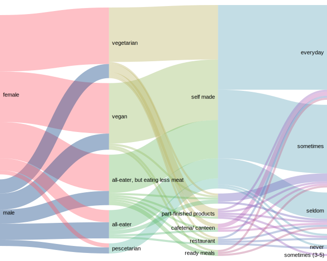

Vegan and vegetarian food nutrition - the new food trends?
I developed an interest in the subject having come into contact with vegetarian and vegan lifestyles in my everyday life ever more often. Nutrition is no longer a marginal phenomenon in today's world.
-
Chart 1
Gender
-
Chart 2
What do they eat?
educational background?
professional career?
-
Chart 3
How long have you been eating like this (years)
What was crucial for their decision?
monthly income (after tax)
-
Chart 4
Who or what has their decision to be vegetarian or vegan to particularly affected
1 • strongly influenced - not affected • 4

-
Chart 5
What do they eat most?
How often do you cook a week?
